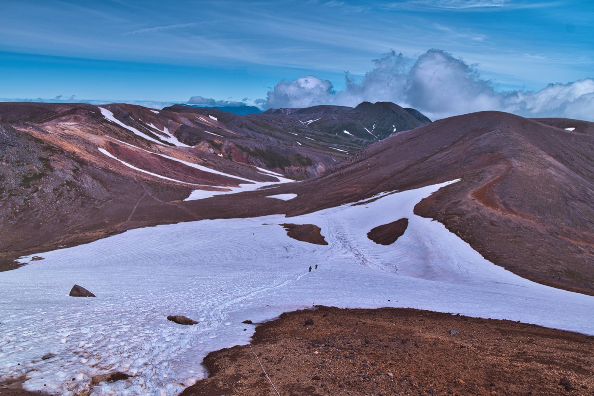
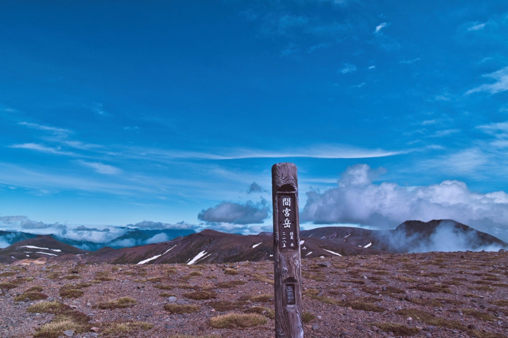

旭岳登頂後に、そのまま裏側に降り、「荒井岳」「間宮岳」「中岳温泉」「裾合平」を経てロープウェイ姿見駅に戻ってくるコースだ。 標準コースタイム7時間を超えるため、体力と経験が必要です。旭岳山頂を裏手に下っていく登山客は、山頂往復する人数に比べ格段に少なく、より自然を感じることが出来る。
旭岳を裏側に降りると直ぐに、雪渓が現れる。積雪が多い年には万年雪になるほどの雪がそこには溜まる。米袋等の尻滑り道具があると、季節外れの雪遊びができ下りも楽になる。 下りきったところには裏旭岳キャンプ場がある。キャンプ場と言っても、少し平らな場所とその横に雪解け水が流れるだけがある。
そこから更に少し登ると、御鉢平と呼ばれる大きなカルデラの淵にたどり着く。その雄大な景色に息を飲むことだろう。御鉢平の底には、温泉が湧き出ているおり、絶景の中の温泉はさぞ気持ちいいことだろうが、絶対に御鉢平に降りては行けない。なぜなら、底には有毒ガスが溜まっており、死に至る。ヒグマやキタキツネなどの野生動物の死体が見かけられるという。
御鉢を囲むように「北海岳」「荒井岳」「間宮岳」「中岳」「北鎮岳」がある。 時間や体力に余裕があれば、北海道で2番目に高い北鎮岳や、カルデラの端にある「御鉢平展望」にまで足を伸ばすとよい。

中岳分岐から中岳温泉に向かう登山道からは当麻岳や比布岳を見ることが出来る。６月中旬からは残雪と緑のきれいなゼブラ模様、その後高山植物達が続々と花を咲かせる。裾合平にはチングルマの大きな群生があり、時期になるとそれ目当ての登山客で賑やかになるほどだ。。
コース上にある中岳温泉には文字通り温泉がある。源泉のみでは熱すぎるため、横に流れる雪解け水を混ぜることでちょうど良い暑さなる。先人達が作っった石囲いの風呂がある。コース上にあるため全身浴したい場合は水着がいるが、小さな風呂が一箇所あるのみなので、閑散期でなければ難しい。このコースは反対周りからでも行けるが、やはりこの時計回りのほうが、全行程の¾を終えたとろこで足湯に浸かり疲れを取ることが出来るのでおすすめだ。